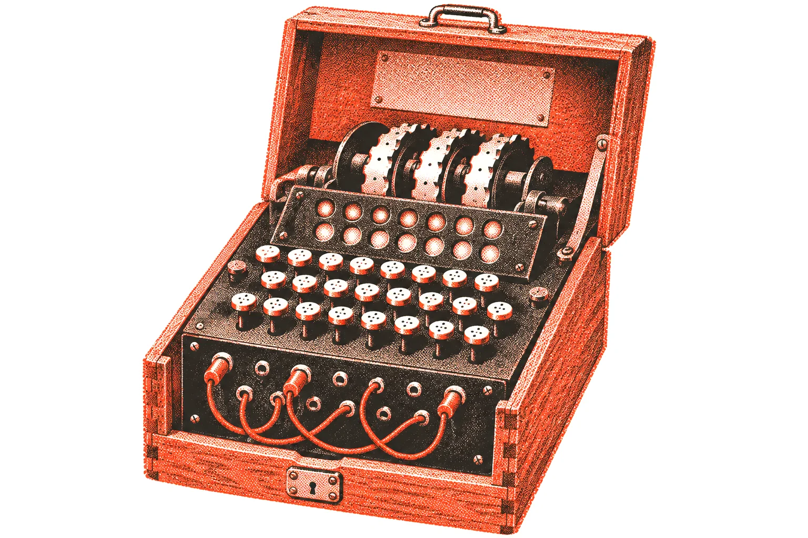
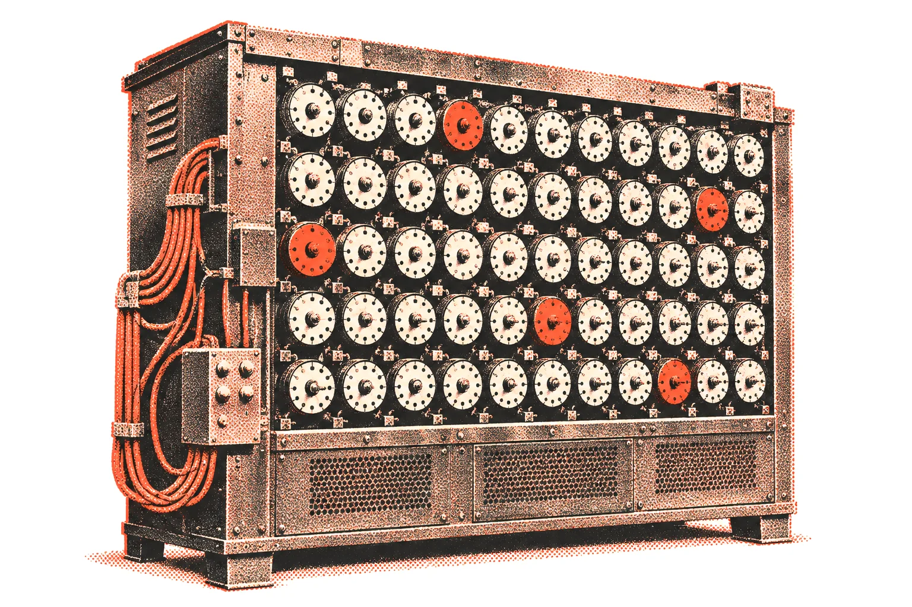
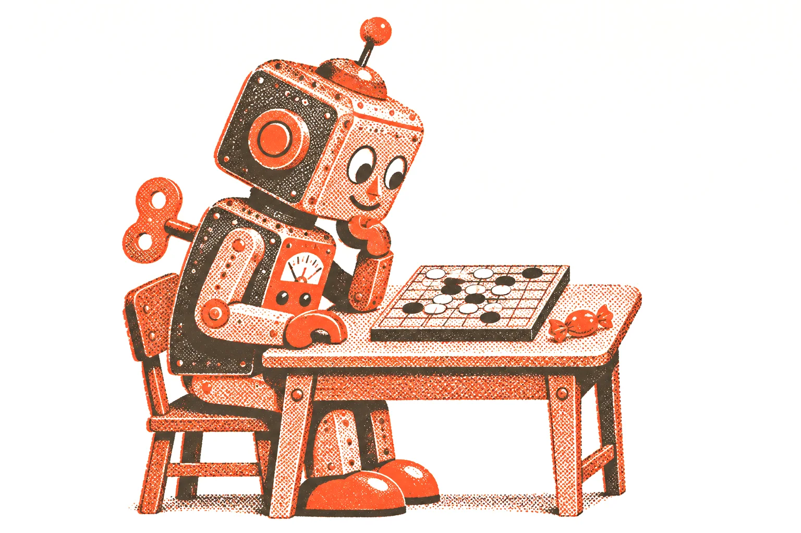
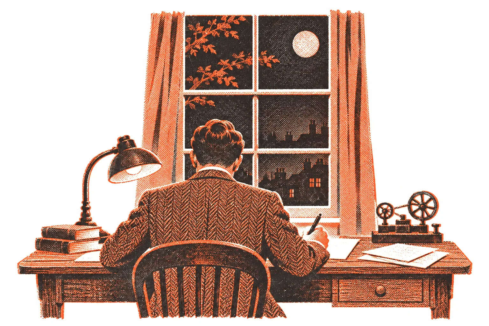

생존을 위한 최소한의 AI 교양 PART 1 기계는 정말 인간처럼 생각할 수 있을까?

AI와 대화하다 보면
지친 게 당연해요.
혹시 AI에게도 영혼이 있는 걸까 —
그런 상상, 해 본 적 있으신가요.
70여 년 전,
똑같은 고민을 먼저 한 사람
앨런 튜링
Alan Turing · 영국의 수학자
2차 세계대전 · 독일군의 난공불락 암호 체계

ENIGMA — 독일어로 ‘수수께끼’
키보드로 치거나 자판을 누르세요
같은 글자를
계속 누르면?
자판의 A를 여러 번 눌러 보세요.
로터 I · II · III, 반사판 B의 실제 배선을 그대로 옮겼습니다.
입력 → 암호
이 기계가 만들어 내는 경우의 수
1초에 하나씩
대입해 본다면?
영국 블레츨리 파크 · 암호 해독 기계 ‘봄 Bombe’

0 가지 조합 시험
하루에 수천 가지 조합을 자동으로 시험해 그날의 설정을 찾아냈습니다.
전쟁을 단축
목숨을 구한 셈
전쟁 전, 스물네 살의 발명
종이 위에 지은 기계,
튜링 머신
인간의 개입 없이, 규칙에 따라
스스로 읽고 쓰는 가상의 기계.
프로그램 카드를 갈아 끼우세요
규칙표 상태 A
1950년 · 논문 「계산 기계와 지능」
Can machines think?
“지능이란 무엇인가?”
끝없는 정의 대신, 실용적인 기준 하나 —
사람과 구별할 수 없을 만큼 자연스럽게 대화한다면,
지능이 있다고 봐야 하지 않을까.
19세기 영국 · 빅토리아 시대 사교 파티의 ‘성별 맞히기 게임’
이미테이션 게임의
원형튜링은 한쪽을
기계로 바꿨다
옆방의 남자가 더 그럴듯하게 ‘여성인 척’하면,
질문자는 오히려 더 헷갈립니다.질문자가 기계와 사람을 구별하지 못한다면 —
그 기계에게 지능이 있다고 봐야 하지 않을까요?
이미테이션 게임 · 체험판
이번엔 당신이 질문자입니다
두 방 중 하나에는 기계가 있습니다. 쪽지 세 장으로 가려내 보세요.
우리나라 방송에서 벌어진 AI 대 인간의 대결
전문가 심사단도
구별하지 못했다
작곡
구별 실패주식투자
구별 실패성대모사
구별 실패사람 AI — 두 선이 겹치는 모습은 개념을 보여 주는 그림이며 실제 데이터가 아닙니다
결과물만 보고 AI와 사람을 가려내는 시험.
그의 이름을 따서 ‘튜링 테스트’라고 부릅니다.
튜링의 또 다른 예견 · ‘학습하는 기계’
어른을 만들지 말고,
아이를 만들어 가르쳐라
어른의 지능을 처음부터 프로그래밍하기보다, 아이의 지능을 가진 기계를 만들어 교육으로 지식을 쌓게 하는 편이 낫다.

스스로 둔 대국0판
무작위로 두는 상대에게 지지 않는 비율
먼저 한 판 둬 보세요. 당신이 흑, 세 개를 나란히 놓으면 이깁니다.
같은 논문에 적힌 예언
“나는 약 50년 후, 즉 20세기 말쯤에는
고 말해도
아무도 어색하게 여기지 않을 것이라고 믿는다.”
이세돌 9단을 꺾다
← 손잡이를 끌어 보세요 →
AI가 만들어 내는 지적 결과물 때문에 인류의 언어 사용 방식 자체가 바뀔 것 —
이것 역시 그가 70년 전에 내다본 미래였습니다.
그의 이름을 딴 상 · 미국컴퓨터학회(ACM), 1966년부터 매년
튜링상
컴퓨터 과학의 노벨상
$1,000,000상금 100만 달러 · 2014년부터 구글 후원
2018년 공동 수상 · ‘AI의 삼총사’
우리 삶을 바꾼 수상자들
카드를 누르면 뒤집힙니다 · 이들의 연구가 없었다면 챗GPT도, 이미지 생성 AI도 없었을 것입니다.
기술의 역사 뒤에 숨은 한 사람의 삶

전쟁 영웅,
그리고 유죄 판결
- 전쟁 뒤당시 영국 법률에 따라 동성애 혐의로 유죄 판결을 받고, 화학적 거세를 강요당하다
- 1954마흔한 살의 나이로 세상을 떠나다
- 2013엘리자베스 2세 여왕, 사후 사면
- 2014영화 〈이미테이션 게임〉 — 아카데미 각색상
- 2021영국 50파운드 지폐의 인물로. 비로소 회복된 명예
1장을 덮으며 — 다시, 처음의 질문